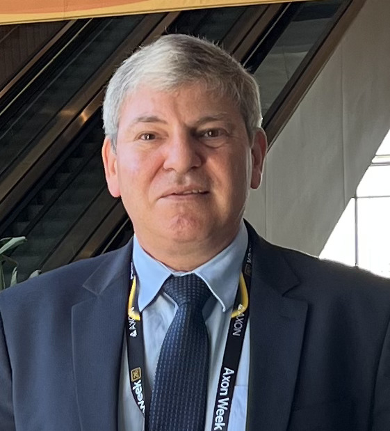

Inteligência Artificial e Pesquisa Científica
Aplicações da Inteligência Artificial na produção do conhecimento científico, suas potencialidades, limitações e aspectos éticos e metodológicos.
38º SEMINÁRIO DO INSTITUTO DE PESQUISA DA BRIGADA MILITAR
Inteligência Artificial e Câmeras Corporais
SOBRE O EVENTO
Ao completar 38 anos de atuação, o Instituto de Pesquisa da Brigada Militar reafirma seu papel na promoção da pesquisa científica, da inovação e da produção de conhecimento aplicado à Segurança Pública.
O seminário propõe o debate científico e institucional sobre Inteligência Artificial aplicada à pesquisa científica e sobre a experiência da Brigada Militar no primeiro ano de implantação das câmeras corporais.
TECNOLOGIA APLICADA À SEGURANÇA PÚBLICA
Uma análise do primeiro ano de implantação, considerando resultados, desafios e perspectivas institucionais.
EIXOS TEMÁTICOS
Aplicações da Inteligência Artificial na produção do conhecimento científico, suas potencialidades, limitações e aspectos éticos e metodológicos.
Análise da experiência da Brigada Militar no primeiro ano de implantação das câmeras corporais, considerando resultados, desafios e perspectivas institucionais.
PALESTRANTES PRINCIPAIS
Inteligência Artificial e Pesquisa Científica

Câmeras Corporais na Brigada Militar: uma análise do primeiro ano de implantação
PROGRAMAÇÃO PRELIMINAR
Comando-Geral da Brigada Militar e/ou Direção do Departamento de Educação e Cultura.
Dr.ª Cristiane Catarina Fagundes de Oliveira.
Dr. Cel PM RR Marco Antonio dos Santos Morais.
Mediação: Maj PM Michel Ribeiro da Rosa — Chefe do Instituto de Pesquisa da Brigada Militar.
PÚBLICO-ALVO
INSCRIÇÃO ONLINE
Preencha os dados. O sistema está preparado para separar as inscrições em modalidade presencial e online.
38º SEMINÁRIO DO IPBM